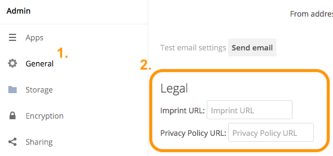

Legal Settings Configuration¶
Because of one or more legal frameworks around the world, some ownCloud instances may need to have links to Imprint and Privacy Policies on all pages; both in the WebUI and within email templates. Some of the more global legal frameworks prominent are:
- The GDPR
- The Australian Privacy Act 1988
- The Canadian Personal Information Protection and Electronic Data Act (PIPEDA)
- The California Online Privacy Protection Act (CalOPPA)
- The Children’s Online Privacy Protection Rule (COPPA)
ownCloud Administrators may also be required to display a legal disclosure document, both in the WebUI and within email templates. A legal disclosure document is a legally mandated statement of the ownership and authorship of the ownCloud installation.
Note
You can also think of it as a rather fancy “About Us” page or an enhanced “Terms and Conditions” page. In Germany, this is known as an “Impressum”.
If you’re required to have one or more of these, you can specify the link to them in two ways.
Using the Web UI¶
In the Web UI, under “Settings -> Admin -> General”, under the heading “Legal”, you can provide a link to an Imprint and a Privacy Policy URL, as you can see in the screenshot below.

Note
The values entered will auto-save.
Using the Command Line¶
From the command line, you can use the occ config:app:get and occ config:app:set commands, as in the code sample below.
# Get the current values, if any, for the Imprint and Privacy Policy URLs
php occ config:app:get core legal.imprint_url
php occ config:app:get core legal.privacy_policy_url
# Set the Imprint and Privacy Policy URLs
php occ config:app:set core legal.imprint_url --value=new_value
php occ config:app:set core legal.privacy_policy_url --value=new_value
For more information about these commands, refer to the config command reference in the occ commands documentation.